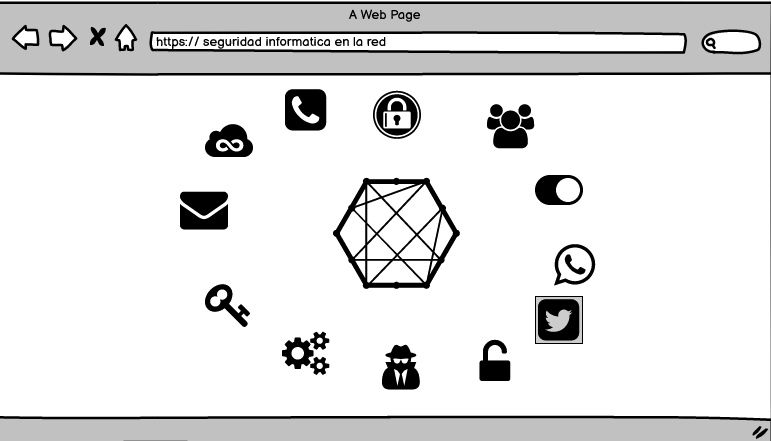

HOJAS DE ESTILO EN CASCADA CSS, FRAMEWORKS CSS. Se implementa principalmente a la hora de separar los atributos del contenido. Aunque éste puede trabajar con muchos tipos de documentos, Según Diego Ponce de León Mi Mockup 